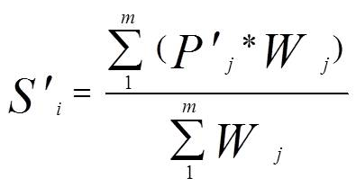
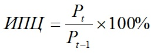

| ПОКАЗАТЕЛИ ИНФЛЯЦИИ |
| Наименование показателя |
Формула |
Краткое описание |
Таблица 1 - Характеристика основных показателей (caption)
| Продолжительность инфляции |
Отсутствует
| Выражает длительность инфляции
|
| Темп инфляции |

|
Темп инфляции характеризует не темп роста общего уровня цен, а темп прироста общего уровня цен. В качестве показателя общего уровня цен обычно используются дефлятор ВВП или индекс потребительских цен |
| Индекс стомости жизни |


|
Показывает соотношение стоимости "рыночной корзины" в данном периоде к ее стоимости в базовом периоде. Исчисляется государственными органами статистики ежемесячно на основе рыночной цены потребительской корзины, потребляемой типичным потребителем (или типичным представителем той или иной социальной группы). В потребительскую корзину входят продукты питания, одежда, обувь, расходы на медицинское обслуживание, образование, транспорт и т. д. |
| Индекс потребительских цен (ИПЦ) |

|
Рост цен измеряется путем сопоставления стоимости определенного набора благ (потребительской корзины) в данном периоде к ее стоимости в базовом периоде, с которым сравнивают цены |